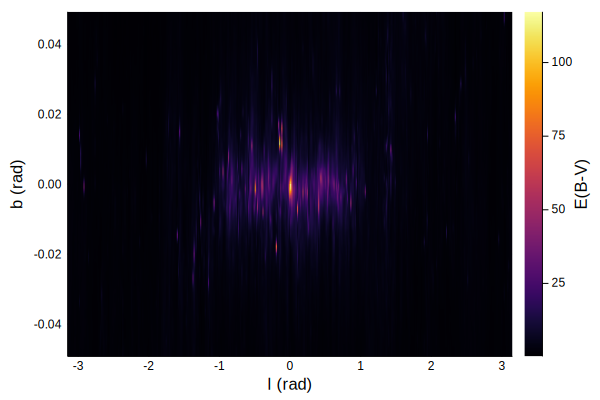

Dust Maps
Usage
julia> dustmap = SFD98Map();
julia> dustmap(0, 2)
0.020303287464050277
julia> l = range(-π, π, length=5)
-3.141592653589793:1.5707963267948966:3.141592653589793
julia> b = range(-π/2, π/2, length=5)
-1.5707963267948966:0.7853981633974483:1.5707963267948966
julia> [dustmap(l[i], b[j]) for i in 1:length(l), j in 1:length(b)]
5×5 Array{Float64,2}:
0.0159853 0.105782 1.40486 0.0158918 0.0119615
0.0159853 0.0268289 3.47788 0.0654852 0.0119615
0.0159853 0.0343457 99.6976 0.103875 0.0119615
0.0159853 0.0432165 2.60569 0.0178195 0.0119615
0.0159853 0.105782 1.40486 0.0158918 0.0119615
Advanced Usage
Our dust maps also have native support for Unitful.jl and Measurements.jl.
julia> using Measurements, Unitful
julia> l = 45u"°"; b=0u"°";
julia> dustmap = SFD98Map();
julia> dustmap(l, b)
6.4290331211742355 mag
julia> l = l ± 0.1u"°"; b = b ± 0.3u"°";
julia> dustmap(l, b)
6.4 ± 5.7 mag
API/Reference
Schlegel, Finkbeiner and Davis (1998)

DustExtinction.SFD98Map — Type.SFD98Map([mapdir])Schlegel, Finkbeiner and Davis (1998) dust map.
The first time this is constructed, the data files required will be downloaded and stored in a directory following the semantics of DataDeps.jl. To avoid being asked to download the files, set the environment variable DATADEPS_ALWAYS_ACCEPT to true. You can also provide the directory of the two requisite files manually instead of relying on DataDeps.jl. Internally, this type keeps the FITS files defining the map open, speeding up repeated queries for E(B-V) values.
References
(dustmap::SFD98Map)(l::Real, b::Real)
(dustmap::SFD98Map)(l::Quantity, b::Quantity)Get E(B-V) value from a SFD98Map instance at galactic coordinates (l, b), given in radians. Uses bilinear interpolation between pixel values. If l and b are Unitful.Quantity they will be converted to radians and the output will be given as UnitfulAstro.mag.
Example
julia> using DustExtinction
julia> m = SFD98Map();
julia> m(1, 2)
0.013439524544325624
julia> l = 0:0.5:2; b = 0:0.5:2;
julia> m.(l, b)
5-element Array{Float64,1}:
99.69757461547852
0.10180447359074371
0.019595484241066132
0.010238757633890877
0.01862100327420125